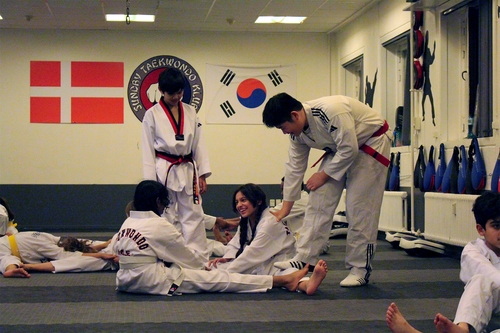
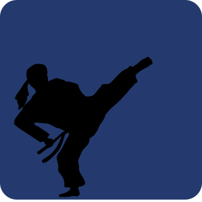
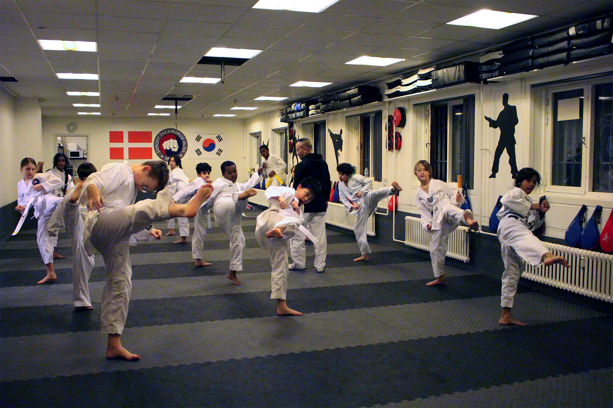
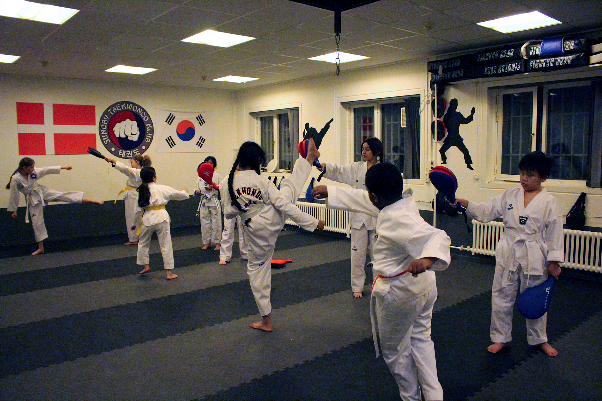
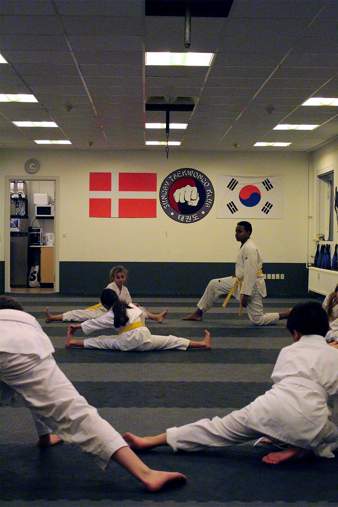
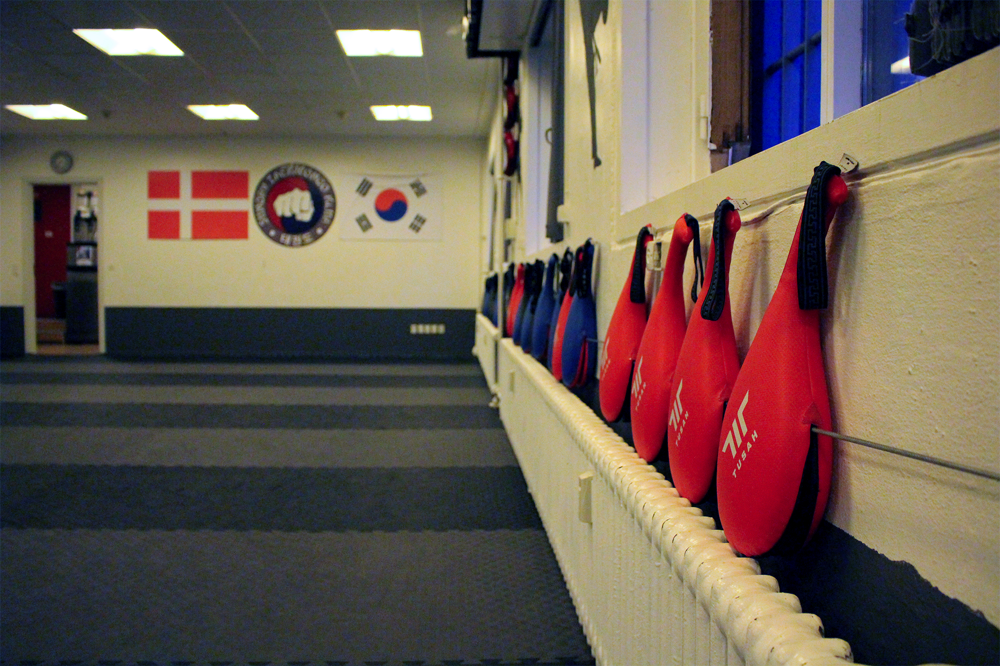
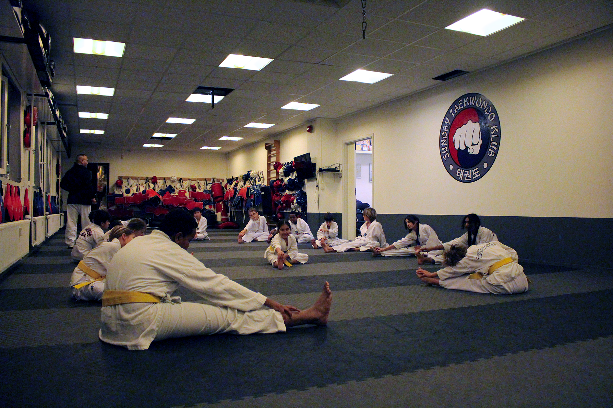

Om klubben
Fællesskab - Mere end blot en klub
Klubben er multikulturel med medlemmer fra forskellige religioner og sociale lag og består ligeligt fordelt af både piger og drenge, hvor alle er lige. Fælles for alle medlemmerne og som er klubbens styrke, er venskabet, interessen for Taekwondo og ikke mindst følelsen af at tilhøre en familie!
Den positive forandring ligger ikke kun i forhold til at fremme børnene og de unges helbredsmæssige udvikling via fysisk aktivitet, men den sociale og menneskelige udvikling, hvor en fælles interesse kan påvises at bringe mennesker sammen på trods af forskelligheder i religion og etnisk baggrund. Vi går ikke kun op i træningen. Vi går op i hvert medlem, som var det vores eget familiemedlem og vi bruger en hel del energi på at afholde events – For medlemmer, venner/familie samt folk fra området!



Historie og fremtid
Sundby Taekwondo Klub blev oprettet oktober 2011 af Robin Benjamin og Mohamed Chikri. Robin har dyrket taekwondo i mange år, ligesom Mohamed, som derudover er uddannet pædagog og blandt andet har arbejdet i mange år på sikrede døgninstitutioner for unge. Klubben har p.t. 140 elever i alderen fra 4-60 år og mange frivillige og engagerede voksne (F.eks. forældre).
Klubben har en klar målsætning og vision ud fra en overbevisning om, at oplevelser i et engagerende foreningsliv for børn og unge er med til at skabe voksne medborgere med lyst til at tage et aktivt ansvar i samfundet. Derfor har klubben følgende mål, hvor vi vil:
- Være med til at skabe Taekwondo-kæmpere på eliteplan.
- Være en klub for unge, som kommer for at hygge sig sammen med andre, med kampsporten som et fælles omdrejningspunkt.
- Være et trygt og inspirerende fristed i en svær hverdag for børn og unge med særlige behov for integration i bred forstand (Fysiske, psykiske, sociale, etniske, osv.).



Rammer
At skaffe gode rammer for medlemmerne, træningsudfoldelse, give gode uddannelsesmuligheder og i det hele taget sikre, at rammerne omkring medlemmerne ikke står i vejen for dennes præstation. Ved at sikre et godt miljø vil medlemmerne inspirere hinanden og sikre det stabile fremmøde, igennem de mange år inden den internationale succes kan nås. I forhold til de børn og unge, som (også) kommer, fordi de søger et fristed og en stille stund i trygge omgivelser (og måske hjælp til lektier eller en snak om mobning) ville det være optimalt med en lektiecafe. Dette er derfor noget vi arbejder frem mod, så vi fysisk ikke blot er en taekwondo klub, men at vores fysiske rammer faktisk tilbyder meget mere. Denne slags kræver selvfølgelig en vis økonomi, og hvis du derfor står i en stilling hvor du kan, eller kender nogen, som kan bidrage til klubben i form af sponsorat eller andre brugbare midler, er du meget velkommen til at kontakte os!
